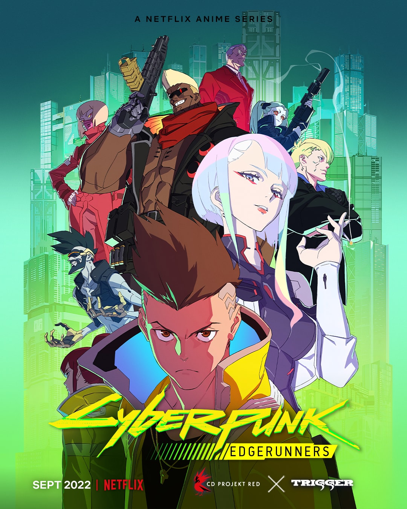
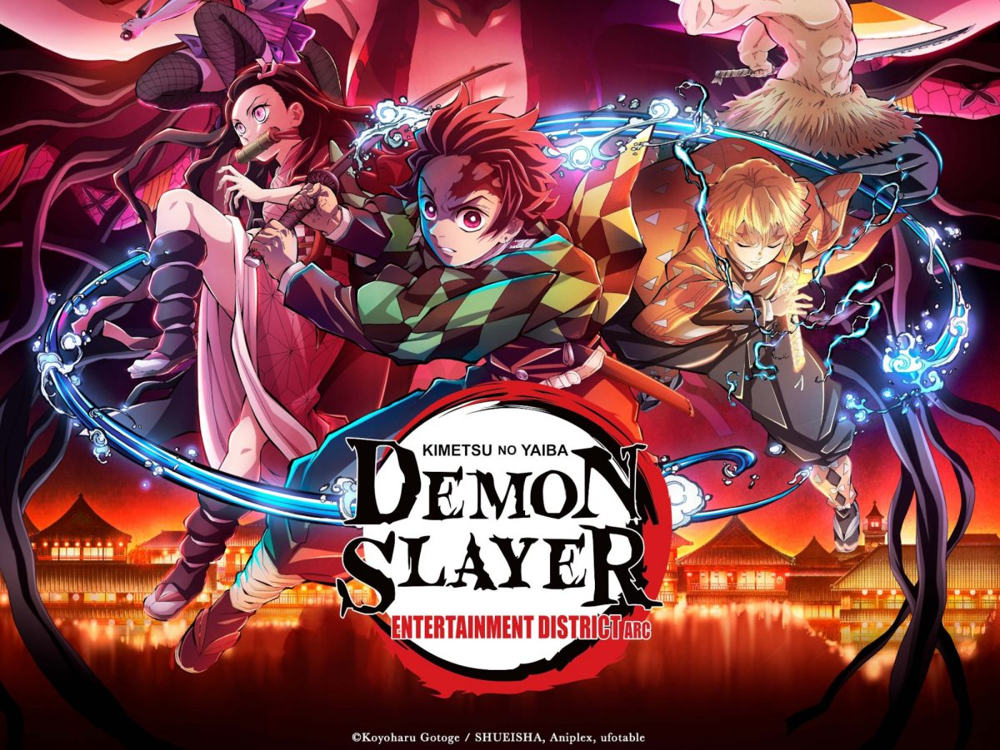

Vencedores do Anime Awards 2023, o Oscar dos animes
No dia 04/01/2023 foi realizada a sétima edição do Anime Awards 2023, premiação idealizada pelo Crunchyroll que celebra as principais produções do segmento.
Os destaques da noite foram Attack on Titan, Demon Slayer e SPY x Family, com seis estatuetas cada,
mas o grande vencedor na categoria Melhor Anime do Ano foi Cyberpunk: Mercenários.

Nas categorias de personagens, Anya de Spy x Family foi destaque, premiada como Melhor Personagem Secundária e Personagem Mais Preciosa. Além disso, sua intérprete brasileira Nina Carvalho levou para casa o prêmio de Melhor Performance de Voz em Português.
Anya, de Spy x Family, foi o Personagem destaque no Anime Awards 2023
Temos como vencedores do anime AWARDS 2023 os seguintes animes em cada categoria
* Anime do Ano

Cyberpunk: Edgerunners
* Melhor Abertura
The Rumbling, do Anime: (Attack on Titan Final Season Part 2)
* Melhor Animação

Demon Slayer: Kimetsu no Yaiba Entertainment District Arc
* Melhor Continuação
One Piece, de Eichiro Oda